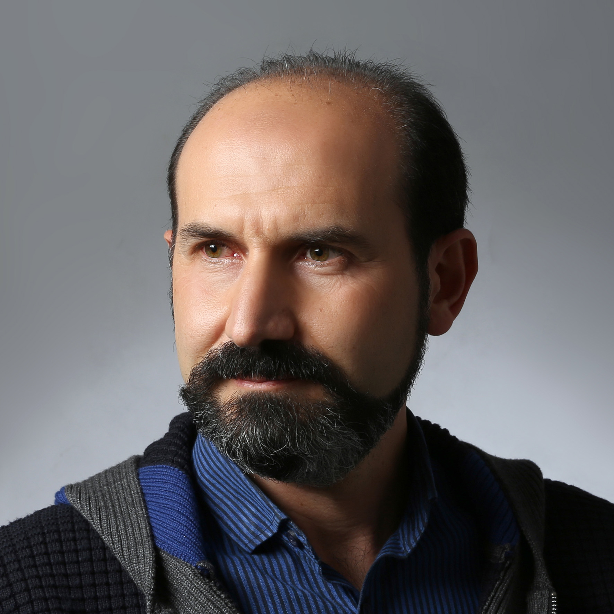
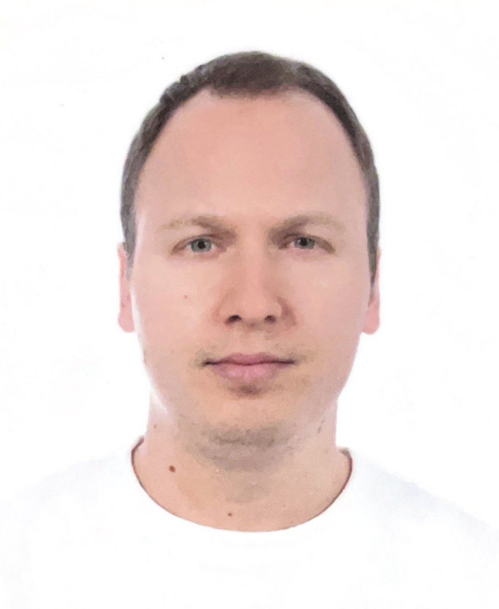
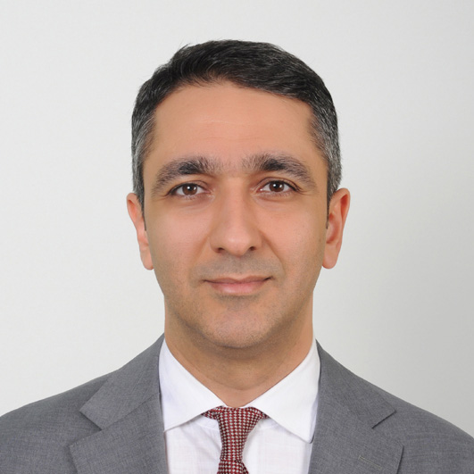

Yönetim Kurulu
Vakfın stratejik gelişimini planlayarak projelerimizi, bağış süreçlerini ve destek programlarını yöneten ekip.

Prof. Dr. Benan Bayrakcı
Yönetim Kurulu Başkanı

Ufuk Güneş
Yönetim Kurulu Başkan Yardımcısı
 Makbule Erdem
Yönetim Kurulu Üyesi
Makbule Erdem
Yönetim Kurulu Üyesi

Doç. Dr. Hayrettin Hakan Aykan
Yönetim Kurulu Üyesi
 Ahmet Özer
Ahmet Özer